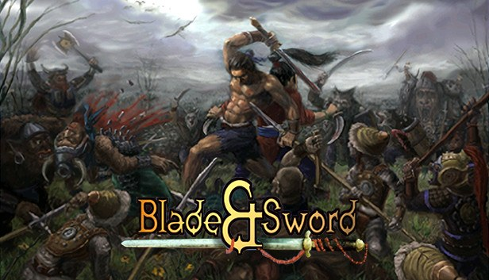
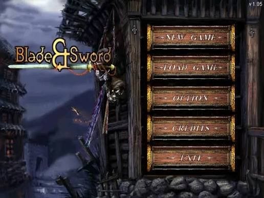
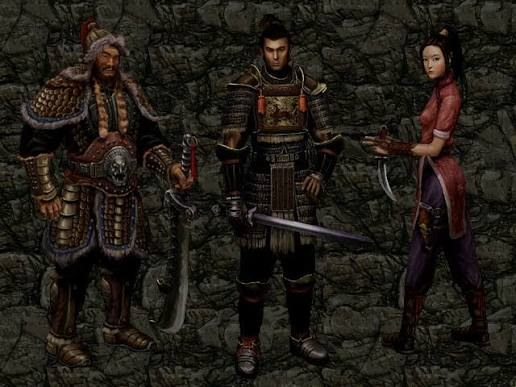
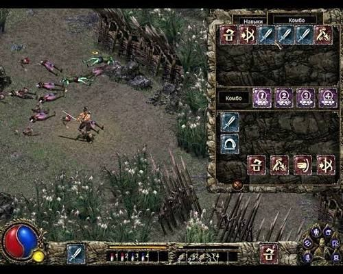
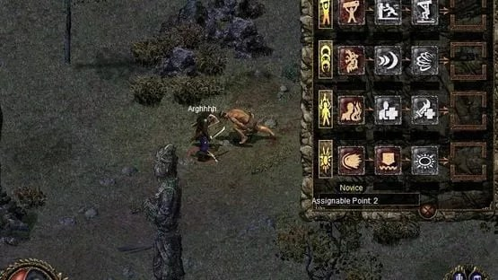

Hè năm đó, hai anh em tớ có một bài toán phải giải mỗi lần bước chân ra tiệm đĩa.
Đĩa game lậu hồi ấy năm bảy nghìn một cái. Nghe thì rẻ, nhưng với hai thằng nhóc thì một con game bốn đĩa là cả một quyết định tài chính nghiêm túc. Thế nên nguyên tắc bất di bất dịch của bọn tớ là: lựa trò nào ít đĩa mà chơi. Một đĩa là nhất. Hai đĩa còn ráng được. Tới ba đĩa là phải hội ý, đứng tần ngần trước cái rổ đĩa nhựa như hai ông cụ non đi chợ tính tiền rau.
Cái hôm gặp Blade & Sword, thắng lợi đến từ một chuyện chẳng liên quan gì tới game: bọn tớ đọc được cái tên.
Cậu phải hiểu, vốn tiếng Anh của tụi tớ hồi đó eo hẹp lắm. Nửa cái rổ đĩa là mấy cái tên nhìn vào như bùa chú. Riêng "Blade & Sword" thì — à, cái này biết nè. Đao với kiếm. Đọc vô hiểu liền, khỏi đoán. Mà đã hiểu được tên thì tự nhiên thấy nó gần gũi, thấy nó của mình. Thêm cái bìa một tay đấu sĩ cởi trần vung kiếm giữa đám giặc trông ngầu đúng gu con nít. Khỏi bàn. Rước về.

Bỏ đĩa vào, chờ màn hình đen một hồi lâu (game này khởi động hay đen màn, hai đứa cứ tưởng đĩa lỗi), rồi việc đầu tiên bọn tớ làm không phải là chơi. Là so sánh.
Hồi đó trong đầu bọn tớ chỉ có một cây thước đo game nhập vai hành động, và cây thước đó tên là Diablo II. Diablo nổi tới mức nó thành một loại giấy thông hành: đứa nào không biết Diablo thì coi như chưa biết chơi game, khỏi ngồi vào bàn nói chuyện. Nên mọi thứ mới đều bị lôi ra đặt cạnh Diablo mà cân. Blade & Sword cũng không thoát.
Thoạt nhìn thì đúng là anh em một nhà thật: cũng góc nhìn từ trên xuống, cũng click chuột chạy lòng vòng, cũng đánh quái nhặt đồ. Nhưng khác Diablo ở một chỗ mà hồi đó bọn tớ thấy hơi hụt hẫng — ít nhân vật. Diablo cho cả một dàn để chọn, còn đây vỏn vẹn ba mống: một ông lực sĩ to con, một anh kiếm khách, và một cô nữ hiệp song đao.

Tới đây thì tớ với ông anh hàng xóm (vẫn là ổng, ông anh trong mấy bài trước ấy) thống nhất nhanh chưa từng thấy, không cần bàn: chọn nhân vật nữ. Lý do thì nói ra hơi kỳ nhưng chân thành — quan niệm về cái đẹp của hai thằng con trai mới lớn nó đơn giản lắm, hễ có lựa chọn thì cứ nhân vật nữ mà lựa. Cô song đao đó gánh nguyên tuổi thơ chiến đấu của bọn tớ, và tớ dám cá ở cái tuổi đó, chín trên mười đứa cũng bấm y hệt.
Thành thật với cậu: mấy tiếng đầu, tớ chán.
Đánh đấm cứ đều đều, quái ra từng con, tớ click click rồi tự hỏi năm nghìn đồng của mình nó đi đâu. Nhưng cậu biết cái luật bất thành văn của con nít thời đĩa lậu rồi đó: đã lỡ mua thì phải chơi cho hết. Đó không phải game, đó là danh dự. Bỏ dở một con đĩa đã bỏ tiền ra mua chẳng khác nào thừa nhận mình lựa sai — mà con nít thì thà cày thêm ba tiếng còn hơn nhận sai. Thế là tớ cắn răng chơi tiếp.
Rồi tới một lúc — tớ không nhớ chính xác là màn nào — cái game nó mở ra.
Hóa ra ba cái đòn đánh lẻ tẻ mà tớ đang bấm chán chết kia không phải để bấm rời từng cái. Chúng nối được vào nhau. Game này lấy ý tưởng từ game đối kháng — kiểu mấy trò thùng xèng ngoài tiệm — rồi nhét thẳng vào một con nhập vai. Mỗi chiêu là một mắt xích: đấm một cái làm quái khựng lại, nối tiếp một cái hất nó tưng lên, rồi bồi thêm phát nữa lúc nó còn lơ lửng trên không. Tớ ngồi thẳng lưng dậy.

Cái làm tớ nghiện hẳn là hệ tuyệt chiêu. Muốn tung chiêu cuối, cậu phải gom đủ "nộ khí" — đánh trúng có, ăn đòn cũng có — rồi giữ phím, và lấy chuột vẽ một đường theo đúng hình đã định. Con trỏ kéo tới đâu tóe ra một vệt như bụi vàng tới đó. Vẽ xong, chiêu nổ. Tớ gọi cái cảm giác đó là "múa chuột", và tớ nhớ như in cái đã đời lần đầu vẽ trúng nét, cả màn hình sáng rực lên.
Từ một thằng nhóc click cho có, tớ thành thằng ngồi tính toán: đòn nào mở màn, đòn nào giữ nhịp, chèn tuyệt chiêu vào khúc nào cho ngọt. Cái game "chán chán" ban đầu lột xác thành trò tớ mê nhất mùa hè đó.
Hồi nhỏ tớ chỉ biết là "đã tay" chứ đâu biết gọi tên. Giờ tra lại mới rõ cái hệ thống đó chỉn chu tới mức nào: mỗi nhân vật có bốn hệ, mỗi hệ mười hai chiêu; học đủ ba chiêu đầu của một hệ là tự động được tặng luôn chiêu tuyệt sát thứ tư, khỏi tốn điểm. Có đỡ đòn, có né, có quật ngã, có cả đòn khóa — và quan trọng nhất là không có thời gian hồi chiêu, nên combo nối dài bao lâu là tùy tay mình. Dân mạng Trung Quốc sau này gọi nó là "Devil May Cry bản 2D". Hồi đó mà biết mình đang chơi thứ tiên tiến cỡ đó thì tớ đã bớt cằn nhằn năm nghìn đồng.
Hồi nhỏ tớ chơi mà gần như không đọc cốt truyện — chữ nhiều, lại toàn chữ khó, tớ bấm bỏ qua hết để lao vào đánh. Lớn lên tra lại mới thấy tiếc, vì cái nền truyện của nó tối và nặng đúng gu tớ bây giờ.
Chuyện xảy ra cách đây hơn ba nghìn năm, lúc nhà Chu diệt nhà Thương. Vị vua bại trận tự thiêu, nhưng trước khi chết, mối hận của ông được một vị thái sư dùng pháp lực đưa ra khỏi cõi người, chờ ngày quay lại đòi lại ngai vàng. Cái oán niệm đó mạnh tới mức xé rách ranh giới giữa ba cõi — cõi người, cõi súc sinh, cõi quỷ — cho yêu ma tràn qua. Nhân vật của cậu bị cuốn vào khe nứt đó, và hành trình đi qua ba vùng đất hoàn toàn khác nhau: nhân gian, đỉnh núi tuyết, và âm phủ.

Đây mới là chỗ tớ phục cái game. Thế giới của nó không đẹp lung linh kiểu tiên hiệp. Nó hoang, lạnh, và buồn. Không có phố xá tấp nập để cậu ghé chơi — chỉ có làng mạc tiêu điều, chùa miếu đổ nát, những con đường vắng tanh mà đi mãi chẳng gặp bóng người. Ở cái thời game quốc sản đứa nào cũng chuộng vẻ đẹp bay bổng, dám làm một thế giới u ám và cô độc như vậy là một lựa chọn gan lì.
Có một cái làng tớ đọc lại mà rùng mình: dân trong đó bị lũ yêu mèo giết sạch. Lúc chưa đánh nhau, đứng xa còn thấy tụi nó bu quanh xác người mà gặm; xong khi mình xông vào, chúng không lao tới ngu ngốc từng con — chúng vây, khép vòng lại quanh mình như một bầy thú thật sự biết phối hợp. Cái kiểu quái biết dàn trận đó, năm 2002 là của hiếm.
Twist cuối thì tớ không kể đâu. Ai chơi rồi sẽ hiểu vì sao cái game tưởng chỉ có chém giết này lại để lại dư vị lâu đến vậy.
Hồi đó tớ đâu biết con đĩa năm nghìn của mình lại là game hành động nhập vai đầu tiên của Trung Quốc, và là một trong những game quốc sản được nể nhất thời ấy. Tên tiếng Trung của nó là Đao Kiếm Phong Ma Lục (刀剑封魔录), do hãng Pixel Studio (像素软件) ở Bắc Kinh làm, ra mắt cuối năm 2002.
Nhóm sáng lập vốn là họa sĩ chính và lập trình chính của một game đình đám khác — Tần Thương (Prince of Qin) — rồi tách ra lập hãng riêng vì muốn làm thứ khác. Họ chán kiểu "cắm đầu farm" của dòng Diablo, và muốn nhét chiều sâu của game đối kháng vào nhập vai. Chính cái ý ngược dòng đó đẻ ra hệ combo mà tớ mê ở trên.
Ở quê nhà, nó bán chật vật vì nạn đĩa lậu (đúng loại đĩa hai anh em tớ hay mua...), chỉ tầm bảy mươi nghìn bản; nhưng cộng cả thế giới thì được khoảng hai trăm nghìn bản chính hãng. Điều bất ngờ là nó được khen ở nước ngoài còn nhiều hơn trong nước — từng lọt Top 10 game nhập vai trên trang GameSpot suốt mười ngày liền, ba ngày trong đó đứng hạng nhất. Năm 2003 hãng ra thêm một bản ngoại truyện tên Thượng Cổ Truyền Thuyết, bối cảnh sau đó bốn mươi năm, cốt truyện riêng và có một cú lật rất được lòng người chơi.
Nói về điểm trừ cho công bằng: game thô. Nhiệm vụ phần lớn là chạy đi chạy lại đưa đồ giữa các NPC. Cốt truyện kể lộn xộn, đọc dễ rối. Trí khôn của quái lúc đỉnh cao lúc ngớ ngẩn — có con biết vây ráp, có con đứng trơ cho cậu chém. Nhưng đây là một hãng non trẻ, làm game trong áp lực thời gian và tiền bạc ngặt nghèo, mà dám thử một hướng đi chẳng ai dám thử. Với tớ, mấy vết thô đó giống vết xước trên một món đồ cũ mình thương — không phải lý do để chê, mà là dấu vết của một thứ được làm bằng tay, bằng liều.
Tin vui cho ai muốn tìm lại tuổi thơ: năm 2022, Blade & Sword đã lên Steam — bản gốc và bản ngoại truyện bán chung một gói, giá rất "hoài niệm", chỉ hơn mười đô. Đây là bản port nguyên gốc, không phải làm lại, nên đừng mong đồ họa lung linh; mong đúng cái cảm giác cũ thôi.
Một lưu ý thật thà: bản Steam hiện tạm chưa chạy ngon trên Windows 11, nên nếu máy cậu Win 11 thì ngó qua phần đánh giá và hướng dẫn của cộng đồng trước khi rước về. Đừng để tớ dụ xong cậu ngồi nhìn màn hình đen y như hai anh em tớ ngày xưa, cứ tưởng máy hư.
Nghĩ lại, cái mùa hè đó thứ khiến tớ nhớ không hẳn là combo hay tuyệt chiêu, mà là cái rổ đĩa nhựa và hai thằng nhóc đứng tính tiền trước nó.
Bọn tớ chọn con game này vì nó ít đĩa và vì đọc được cái tên — hai lý do buồn cười đến mức chẳng liên quan gì tới việc nó hay dở. Rồi cả hai cùng bấm nhân vật nữ, cùng chán, cùng cắn răng chơi tiếp, cùng ồ lên cái ngày phát hiện ra mấy chiêu nối được vào nhau. Ông anh hàng xóm giờ mà đọc được bài này, chắc sẽ cười: ừ, con game đó tụi mình mua đại mà hên ghê. Ừ, hên thật. Nhưng tớ nghĩ nó cũng dạy hai đứa một điều mà mãi sau này đi làm tớ mới gọi được tên — nhiều thứ hay ho chỉ mở ra cho những ai chịu ở lại đủ lâu qua khúc chán.
Blade & Sword hiện có trên Steam, bán chung gói với bản ngoại truyện Thượng Cổ Truyền Thuyết. Nhớ hai điều: đây là bản port nguyên gốc (đừng mong đồ họa mới), và nếu máy Win 11 thì kiểm tra kỹ trước khi mua. Còn lại thì cứ chọn nhân vật nữ như hai anh em tớ — theo quan niệm về cái đẹp, không bàn cãi.